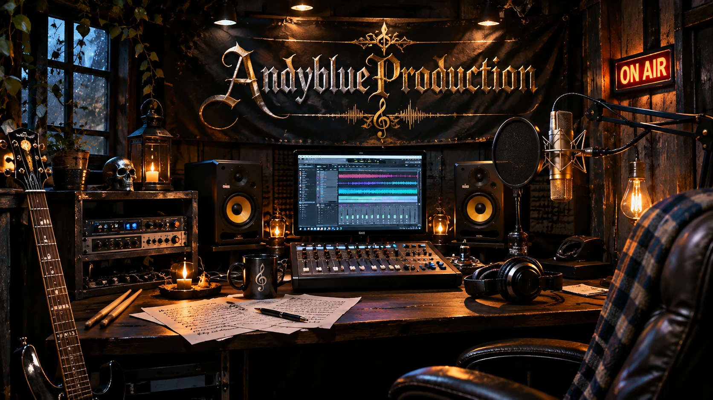

ANDYBLUE PRODUCTION
Songwriter · Lyricist · Producer
Different musical worlds. One shared passion.
Andyblue Production is an independent creative music production venture rooted in Skaraborg, Sweden. A place where songwriting, music production and storytelling come together without musical boundaries.
Our passion is to create music that connects, evokes emotion, surprises and entertains. From melodic rock and personal life stories to powerful metal and humorous musical experiments.

BEHIND THE MUSIC
We believe in creative freedom, strong musical identities and collaborations where different artistic expressions can meet and evolve.
Every project has its own personality, its own story and its own musical universe.
We take music seriously – but never ourselves.
Welcome to Andyblue Production.